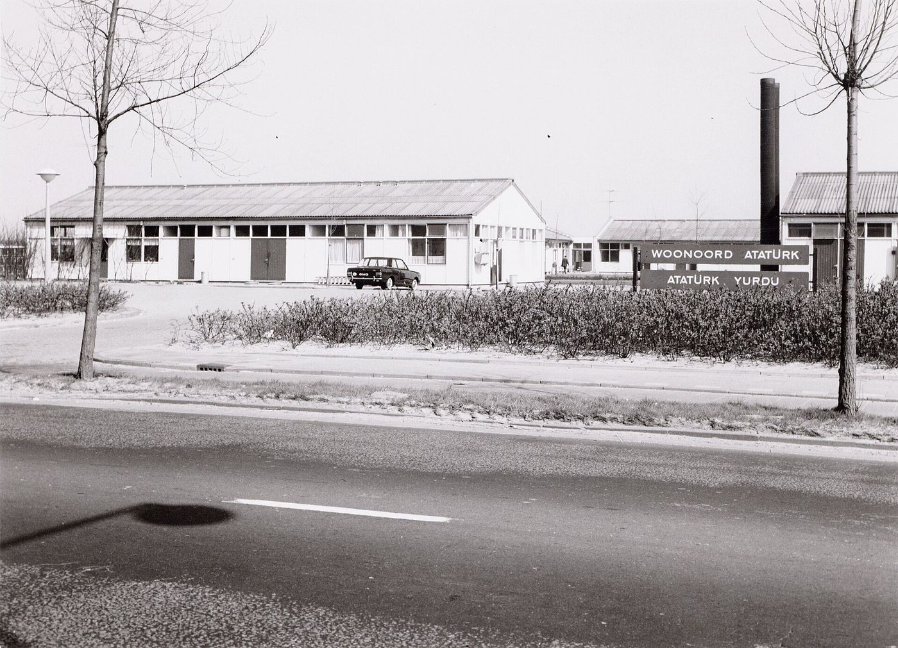

- Langue
- Turc · anglais · français
- Décalage horaire
- 2 heures en hiver, 1 en été
- Première séance
- Gratuite
- Urgence
- 112 · 113 Zelfmoordpreventie
Du foyer Atatürk à aujourd’hui
Au milieu des années 1960, au nord d’Amsterdam, sur le Klaprozenweg, un foyer de baraques basses fut installé pour des travailleurs étrangers. Le foyer où logeaient les ouvriers turcs s’appelait Atatürk. Les photographies conservées dans les archives montrent des lits de fer couverts de dessus-de-lit fleuris, le réfectoire commun, des valises posées sur les armoires : ce n’était pas une maison, mais une salle d’attente. Aux Pays-Bas aussi, comme en Allemagne, on supposait que les ouvriers travailleraient quelques années et rentreraient. Avec les regroupements familiaux qui commencèrent dans les années 1970, les foyers se vidèrent, et une vie nouvelle se construisit dans les quartiers d’Amsterdam, de Rotterdam, de La Haye et d’Utrecht.


Cette histoire a aujourd’hui une littérature écrite en néerlandais. Le roman de Murat Isik sur le fils d’une famille turque qui grandit dans le quartier du Bijlmer à Amsterdam, Wees onzichtbaar (« Sois invisible »), a remporté en 2018 le Libris Literatuur Prijs, l’un des plus importants prix du roman de langue néerlandaise. Le titre du roman est comme le résumé d’un conseil que l’exil laisse si souvent à la deuxième génération : ne te fais pas remarquer, n’attire pas l’attention, ne hausse pas la voix. Un tel conseil est une stratégie de protection ; mais dans la vie d’un enfant, il peut aisément se changer en interdit. Le travail psychanalytique commence souvent exactement à ce point : quand quelqu’un qui a appris à être invisible ose, pour la première fois, parler de sa propre voix devant un autre.
Le voyage de la littérature turque aux Pays-Bas est intéressant sous un autre angle aussi. Aşk-ı Memnu de Halit Ziya a été publié en néerlandais sous le titre Verboden liefde, dans une traduction de Hanneke van der Heijden et Margreet Dorleijn. L’essai sur Aşk-ı Memnu de ce site lit le roman d’un œil psychanalytique.
De quoi parle-t-on souvent en séance ?
Parmi les questions que les analysants vivant aux Pays-Bas apportent souvent figurent les traces laissées par le fait de grandir bilingue, le sentiment, à l’école et au travail, de n’être jamais « assez néerlandais », la tension entre les attentes de la famille et une vie individuelle, les mariages mixtes et le choix de langue des enfants, l’angoisse et la culpabilité devant des parents vieillissants et lointains. La différence entre le style de communication ouvert et direct dont on parle souvent aux Pays-Bas et la manière indirecte et respectueuse de parler apprise à la maison est aussi, pour beaucoup de gens, une fatigue invisible du quotidien.
Informations pratiques
Décalage horaire. Les Pays-Bas utilisent UTC+1 en hiver et UTC+2 en été. La Turquie est à UTC+3 toute l’année ; elle a deux heures d’avance en hiver et une en été.
L’assurance. Aux Pays-Bas, l’accès aux services de santé mentale (GGZ) passe généralement par le médecin de famille (huisarts) et relève de l’assurance maladie obligatoire. Les séances avec un praticien qui exerce hors des Pays-Bas ne sont pas couvertes par l’assurance.
La langue. Les séances peuvent se tenir en turc, en anglais ou en français ; il est possible d’aller d’une langue à l’autre. Je ne propose pas de séances en néerlandais.
En cas d’urgence
Ces séances ne sont pas un service d’urgence. Si vous risquez de vous faire du mal ou d’en faire à quelqu’un d’autre, appelez aussitôt le 112. Si vous avez des pensées suicidaires, vous pouvez joindre 113 Zelfmoordpreventie à toute heure, par téléphone ou par le chat de son site.
Questions fréquentes
Dois-je obtenir une orientation de mon huisarts ?
Non. Ces séances se déroulant hors du système d’assurance néerlandais, aucune orientation n’est nécessaire. Pour la même raison, l’assurance ne rembourse pas.
Je suis né aux Pays-Bas ; dois-je parler turc ?
Vous choisissez la langue dans laquelle vous parlez. Vous pouvez parler turc, anglais ou français, et aller d’une langue à l’autre.
La première séance est gratuite. Pour fixer un jour et une heure ou poser vos questions, vous pouvez m’écrire.
Formulaire de contact